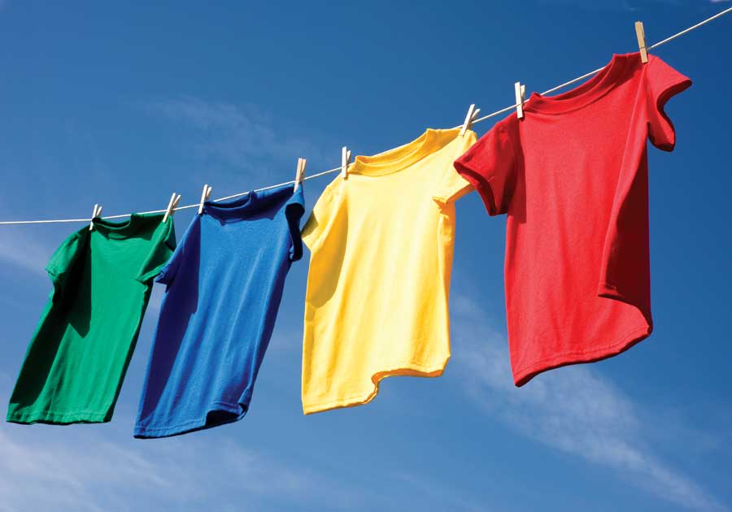
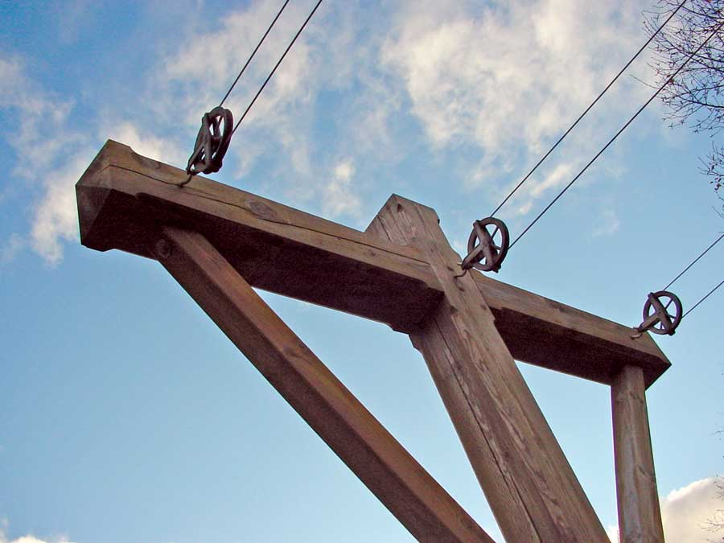
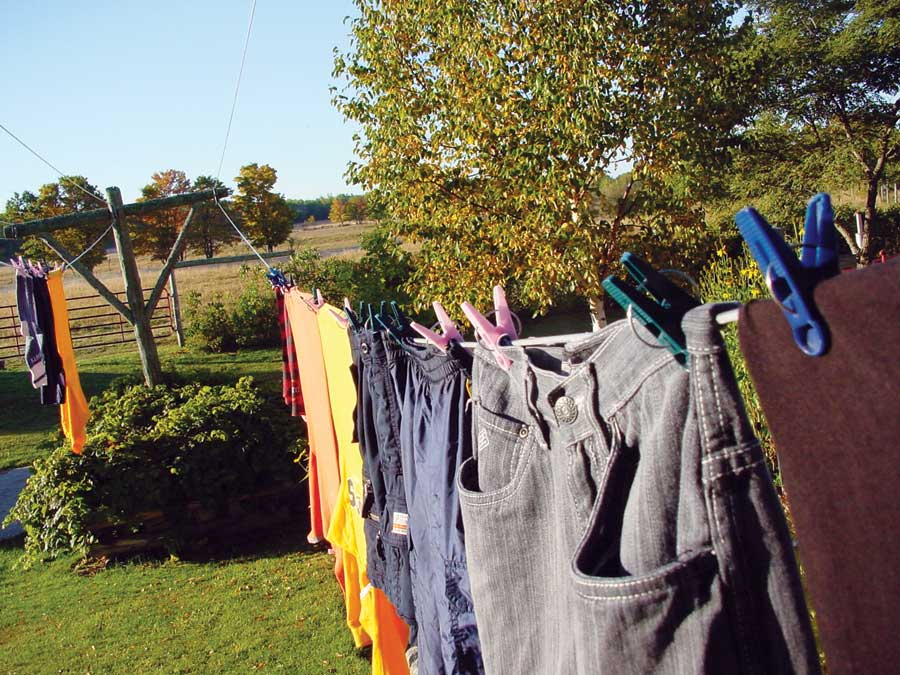
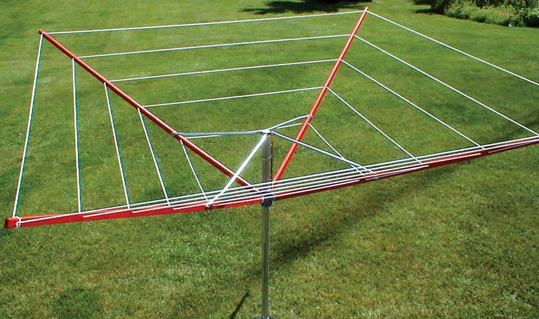
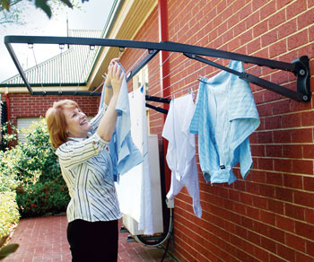

A good outdoor clothesline offers several benefits. First, it helps save money by keeping your clothes out of the dryer. That means energy savings that are also great for the environment. Next, there are the aesthetic advantages: The fragrance of sun-dried clothes can’t be matched by perfumed anti-static sheets you toss into a dryer.
Almost 20 years ago, I built my first clothesline, and it worked well, even with all the laundry generated by our houseful of kids reared on cloth diapers. But since then, I’ve also noticed things about the design that could have been better - improvements I’ve worked into this plan.
If a clothesline is going to make a serious contribution to your household, it has to be large enough to handle a serious amount of laundry. That’s the reason my design includes three separate lines that run on pulleys. (One good source for pulleys is Lehman’s.) My original system had a trio of lines, but what I hadn’t counted on was the stress of supporting all that wet clothing on a windy day. My old clothesline never broke, but it did start to twist and bend after 10 years, so my updated version is made of alkaline copper quaternary (ACQ) pressure-treated 8-by-8s, with 4-by-4 knee braces. Think that’s overkill? Don’t be fooled. After you tip the post up and attach lines, big wood is just right, both visually and structurally.
But 8-by-8s are expensive, so you could opt for 6-by-6s if the poles are short or if your design doesn’t include cross braces. You could also make use of thinner timber if you use guy wires tied to anchors in the ground. Got some rot-resistant trees you’d like to harvest for the project (cedar, black or honey locust, Osage orange, white oak, black walnut)? They will work, too, though joinery will be more challenging unless you saw the logs into beams first.
At my place, a pulley supporting one end of each line is fastened to my stone house, while the other ends of the lines are supported by pulleys on the timber frame post and crosspiece. Knee braces keep these parts square and rigid. You could also have both ends of the lines supported by posts if you’d rather not attach anything to your house.
To build your own clothesline, begin by gathering materials. You’ll need a 16-foot 8-by-8 for the main post, an 8-foot-long 8-by-8 for the crosspiece, and one 12-foot-long 4-by-4 for the two knee braces. These standard lengths are longer than you’ll need, allowing you to cut exactly what’s required. For a lower clothesline that’s not accessed from a porch, for example, the main post can be shorter.
As for tools, you’ll need a hand-held circular saw, an electric drill, a 1-inch-wide chisel, a 16-ounce hammer or mallet, a carpenter’s framing square, a sharp handsaw and a socket wrench. You’ll also need some stout sawhorses. A chop saw is nice if you can get one, but not necessary. Would you like to add decorative details to your clothesline? A router spinning a large chamfer bit can add a lot of beauty in just a few minutes.
Measure and mark the location for the joint where the crosspiece will join the main post. A notch in the post supports the crosspiece (see photo below), and determining its height depends partly on the soil conditions in your yard. Ideally, the base of a clothesline extends at least 4 to 5 feet into the soil. In my case, bedrock was only 2 feet below the surface, so I added extra support around the post with a stone-filled wooden crib. Figure out how much of your post will sit below ground, and then add 5 to 7 feet to this figure to determine the location of the half lap joint for the crosspiece. (A half lap joint consists of a notch about halfway through each of the pieces being joined so they fit together sort of like Lincoln Logs.)
Regardless of how you’ll support the bottom end of your clothesline, measure and mark the location of a half lap joint on the main post that supports the crosspiece. Instead of measuring the width of the crosspiece with a tape measure, lay this part on top of the main post (make sure it’s square) and mark its width and location directly with a pencil.
Now it’s time to use your circular saw. Start by making two careful cuts, one on each waste side of the half lap zone at the full depth your saw will cut. Next, complete more cuts between these first two, spaced about a quarter of an inch apart. Remove the remaining waste with your chisel and mallet.
As the name suggests, the half lap notch needs to be half the thickness of the main post, and this presents a challenge. Most circular saws can’t cut deep enough to get to the center of an 8-by-8. You can use a handsaw or carefully wielded chain saw to continue the necessary cuts before chiseling the half laps to their full depth. Test fit the crosspiece and main post and adjust the joints as necessary for a good fit. Repeat the procedure to cut a notch in the crosspiece.
Now it’s time to cut and fit the two knee braces (see the diagonal supports in the photo in the Image Gallery). While you could notch these parts into pockets cut in the crosspiece and main post, using half-inch carriage bolts (8 inches long) at each end does a great job, and they’re much easier to install. Temporarily assemble the main post and crosspiece now, nudging these parts one way or the other so they’re perfectly square with each other. To create greater strength, I cut the top ends of the knee braces to 50 degrees and the bottom ends to 40 degrees, though these numbers are just starting points. Big timbers are usually twisted, so you’ll probably need to fine-tune the angles on the knee braces for a good fit. Now cut one angled end on each knee brace, hold the parts in position, then mark and cut the other ends. An electric chop saw makes it easier to do this work accurately.
Perfect the fit of the knee braces against the crosspiece and main post, then drill holes for the carriage bolts and install them with a socket wrench. Finish up by angling the ends of the main post and crosspiece, then chamfering the edges of these parts with a router if you’d like a more finished look. Tip the assembly upright in the hole you’ve dug (I got some help from a neighbor with a loader tractor), have someone hold the post plumb, then fill in and pack down the soil around the post.
Attach pulleys to the crosspiece(s) and the wall, being careful to anchor pulleys to studs - not just the siding or sheathing - and string the line. I find it best to pay more for the high-grade, stainless steel cable that’s covered with plastic. Less expensive kinds are covered in plastic, too, but stainless steel doesn’t rust if the plastic cracks. I’ve also found that the stainless steel versions are stronger.
Now you’re ready to dry clothes without spending a dime on fossil-fuel-produced electricity!
You can dry clothes without using any fossil fuels - even if you have a small backyard or live in an apartment. There are lots of options in addition to a permanent clothesline stretched between two posts.
Single-pole rotary clotheslines (see Image Gallery) fold up like an umbrella. Some models can be removed from the yard when not in use.
Retractable clotheslines attach to the outside wall of your house, and several lines are pulled out from a canister and attached to a pole or fence. After the clothes are dry, the lines roll up into the canister.
Folding-frame clotheslines (see Image Gallery) attach to a wall and fit tightly against it when not in use. To dry clothes, simply unfold the unit.
Drying racks can be used outside on a balcony or patio in good weather. You can also use them indoors, especially in winter when indoor air may be particularly dry.
- Troy Griepentrog
|
 ISTOCKPHOTO/MIKE FLIPPO PHOTOGRAPHY Dry your clothes without spending a dime on electricity. |
 STEVE MAXWELL Using pulleys on clotheslines makes hanging clothes easier and more efficient.
|
 STEVE MAXWELL Building an extra-sturdy clothesline ensures it can handle lots of heavy, wet laundry. |
|
 SUNSHINE CLOTHES DRYER/G&G INDUSTRIES You don’t need a huge yard - or any yard at all - to take advantage of the benefits of a clothesline. |
 BREEZE DRYER/HILLS This folding clothesline fits neatly on a patio and takes little room when not in use. |
|